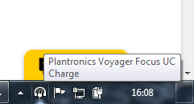

Bonnes pratiques pour un chatbot
Thématiques associées :- Avancé
- Composant
Date de parution
Avant-propos
Dans cet article, les termes chatbot, tchat et chat se réfèrent à une fenêtre de dialogue qui permet d'engager une conversation écrite avec un opérateur ou une intelligence artificielle, parfois également appelée agent conversationnel.
1. Les recommandations de la marque
Cet article détaille un certain nombre de points techniques sur lesquels il faut être vigilant. Si l'objectif est de développer un chatbot pour un site Orange, il convient dans un premier temps de consulter les recommandations de la marque à ce sujet disponibles sur le site : design.orange.com (Conversational UI guideline).
2. Accéder au chatbot
Avant d'utiliser un chatbot, bien souvent il est nécessaire de faire apparaître celui-ci en cliquant sur un bouton situé dans un coin de la page. L'utilisateur doit être en mesure de découvrir par lui-même qu'il a la possibilité d'utiliser un chatbot sur la page qu'il consulte. C'est pourquoi il est important d'utiliser un bouton dont le libellé est suffisamment explicite. Celui-ci peut dépendre du contexte mais par exemple sur un site marchand un bouton intitulé : « Nous contacter », « Un problème avec votre commande ? » sont des propositions valides.
Navigation au clavier
Il est suffisant de mettre un bouton dans un coin de la page à condition que celui-ci soit accessible, notamment, à l'aide du clavier. Pour cela, il faut utiliser un vrai bouton (balise <button>) au niveau du code, comme c'est le cas sur cette page (bouton contact situé en bas à droite de la page).
Les deux boutons ci-dessous semblent identiques si on les utilise avec la souris. En revanche, si on essaie de les utiliser en navigant à l'aide de la touche Tab, le second bouton (réalisé à l'aide d'une balise <span>) n'est pas focusable. Dans ce dernier cas, un utilisateur qui navigue à l'aide du clavier ne pourra tout simplement pas ouvrir le chatbot.
Testez-les, à l'aide de la souris et à l'aide du clavier :
- : bouton focusable (balise
<button>). - Contact : bouton non focusable (balise
<span>).
Navigation avec une loupe d'écran
Pour les utilisateurs de loupe d'écran, il est conseillé de ne pas coller le bouton de contact sur le bord de la fenêtre. Les défilements de l'écran occasionnés par l'usage de la loupe rendent les déplacements du pointeur de la souris parfois moins précis. Si l'utilisateur ne vise pas précisément le bouton de contact, des info-bulles provenant d'éléments affichés en-dehors de la fenêtre peuvent venir masquer le bouton. Dans ce cas l'utilisateur risque de ne pas s'apercevoir qu'un chat est disponible.
Dans la capture d'écran ci-dessous prise sous Windows, le bouton est masqué par une info-bulle provenant d'un élément présent dans la barre Windows :

Même exemple mais cette fois avec une petite marge entre le bouton et le bord de la fenêtre :

Navigation au lecteur d'écran
La présence d'un bouton pour accéder au chatbot, en bas à droite, suffira à faire comprendre à certains utilisateurs qu'un chatbot est disponible sur la page. Cela dit, pour les utilisateurs aveugles ou malvoyants qui naviguent avec un lecteur d'écran, cela risque de poser des difficultés. En effet, pour entendre ce bouton, placé bien souvent à la fin du code, il faudrait que l'utilisateur écoute la page en entier jusqu'à la dernière ligne. Donc, il devrait écouter la totalité du pied de pages qui contient souvent de nombreux liens. En pratique, on se doute que ce n'est pas ce que font les utilisateurs.
Dans ce cas de figure, un utilisateur malvoyant n'aura donc tout simplement pas connaissance de ce bouton, il ne pourra donc pas accéder au chat.
Plusieurs solutions pour éviter ce problème sont disponibles :
- Ajouter des liens d'évitement sur la page
- Utiliser des landmarks ARIA
- Utiliser une balise de titre
Ajouter des liens d'évitement
Les liens d'évitement permettent d'accéder directement à une zone spécifique de la page. Ils sont insérés en haut de page et donc vocalisés en premier. La présence d'un lien d'évitement « accéder au tchat » permettant d'aller directement au chatbot permettra à l'utilisateur d'anticiper son utilisation. Ces liens d'évitements peuvent être masqués à l'écran, même si ce n'est pas à privilégier (grâce au masquage accessible).
Attention aux anglicismes. Remarquez ici l'utilisation du mot «tchat» et non «chat». A l'écoute, le second mot est vocalisé comme l'animal (sans l'accent anglais cela peut prêter à confusion).
La présence des liens d'évitement a également un effet positif pour les personnes qui naviguent au clavier. Par exemple, sur la page que vous consultez actuellement, des liens d'évitements sont disponibles. Ils sont masqués par défaut et deviennent visibles à la prise du focus. Pour les faire apparaître, vous pouvez cliquer dans la barre d'adresse de votre navigateur puis appuyer plusieurs fois sur la touche Tab (pour positionner le focus en début de page).
Utiliser des landmarks ARIA
En plus des balises de structure HTML5 prédéfinies (main, aside, footer et header, ...), il est possible de créer des landmarks « sur mesure » en utilisant le rôle ARIA region.
<div role="region" aria-label="fenêtre du tchat">
<!-- code du chatbot -->
</div>
Ce code permet de définir une zone « fenêtre de chat » dans la page. Cela permet aux personnes qui utilisent un lecteur d'écran d'accéder au tchat depuis la liste des régions. La capture d'écran ci-dessous a été obtenue en affichant la liste des régions depuis le lecteur d'écran NVDA :
Ainsi avec seulement deux petits attributs ARIA, on simplifie grandement la navigation.
Utiliser une balise de titre
D'après des sondages récurrents réalisés par webaim.org auprès d'utilisateurs de lecteurs d'écran on s'aperçoit que les landmarks ne sont pas encore connus de tous. Par sécurité, on peut ajouter également une balise de titre (h1, h2...) avant le tchat.
Pour que ce titre ne soit pas visible à l'écran, il suffit d'utiliser une classe de masquage accessible (visually-hidden). Cela permettra également aux utilisateurs d'accéder au chat depuis la liste des titres de la page.
<div role="region" aria-labelledby="tchat-title">
<h1 id="tchat-title" class="visually-hidden">Fenêtre du tchat</h1>
<!-- code du chatbot -->
</div>
3. Accessibilité du chatbot
Maintenant que tous les utilisateurs peuvent accéder au chatbot, il faut s'assurer que celui-ci soit accessible.
Navigation au clavier
Concernant la navigation au clavier, il suffit de vérifier en navigant sans l'aide de la souris, qu'il est possible de cliquer sur l'ensemble des boutons (touche Tab pour déplacer le focus, touche entrée pour activer un bouton) et qu'il est possible de saisir et d'envoyer des messages.
Après quelques échanges dans le chat, une barre de défilement apparaît. Il faut également s'assurer que celle-ci soit utilisable à l'aide des flèches du clavier. C'est le cas nativement dans Firefox, par contre pour Chrome il a été nécessaire de rendre cet élément focusable à l'aide d'un attribut tabindex.
<div id="chat-content" tabindex="0">
Enfin, ne pas oublier de faire en sorte que le focus soit visible lorsque celui-ci est positionné sur l'élément permettant de faire défiler les messages :
div:focus {
outline: .2rem solid #f16e00;
}
Navigation avec une loupe d'écran
La largeur de la fenêtre de chat peut avoir une incidence sur le confort de lecture. En effet, si, celle-ci est trop large, la lecture du chat à l'aide d'une loupe peut devenir fastidieuse. Notamment si, l'utilisateur est obligé de faire défiler l'écran pour lire la totalité d'une ligne du chat.
Dans la capture d'écran ci-dessous (loupe d'écran à 600%), la fenêtre est trop large, l'utilisateur devra déplacer la zone visible à gauche et à droite pour parcourir la fenêtre de chat :
La capture d'écran ci-dessous a été prise avec la fenêtre de chat visible sur cette page. Ici, avec un zoom de 600%, il est possible de lire la totalité du chat sans déplacer la portion d'écran visible.
Navigation avec un lecteur d'écran
Labelliser les éléments interactifs
Des labels ont été ajoutés sur le champ de saisie et sur le bouton envoyer à l'aide d'un attribut aria-label ou title. Ainsi, un utilisateur malvoyant utilisant un lecteur d'écran entendra qu'il s'agit du champ permettant de saisir le message à envoyer.
<input type="text" title="message à envoyer" ou aria-label="message à envoyer" id="chat-input" autocomplete="off" placeholder="Saisir votre message...">
<input type="submit" title="Envoyer ce message" aria-label="envoyer">
La même chose sur les boutons permettant de réduire et fermer la fenêtre du chat.
Prévenir l'utilisateur de l'arrivée d'un nouveau message
Bien que les messages reçus apparaissent à l'écran, le lecteur d'écran ne les vocalisera pas automatiquement par défaut.
Pour corriger ce problème, il suffit d'ajouter un attribut aria-live pour indiquer au lecteur d'écran que celui-ci doit vocaliser automatiquement toute modification apportée à la liste des messages.
<div id="chat-content" tabindex="0" aria-live="polite">
Identifier l'émetteur d'un message
Est-ce que vous pouvez identifier qui est l'émetteur du message «Test message 2» dans la capture d'écran ci-dessous ?
En regardant l'image précédente, on s'aperçoit que ce message est aligné à droite, il suffit de remonter en haut de la pile des messages alignés à droite pour trouver l'émetteur : «moi».
Pour un utilisateur qui ne voit pas l'écran, cela peut devenir compliqué puisque l'émetteur du message est inséré visuellement (à juste titre) que lorsqu'il y a un changement d'émetteur dans la conversation.
Pour lever toute ambiguïté, on va indiquer devant chaque message son émetteur pour les utilisateurs qui naviguent à l'aide d'un lecteur d'écran uniquement (utilisation de la classe de masquage accessible visually-hidden).
<div class="message">
<span class="visually-hidden">
Djingo dit :
</span>
Test message 1
</div>
...
<div class="message">
<span class="visually-hidden">
moi dit :
</span>
Test message 1
</div>
Remarque : le formalisme adopté («moi dit», «Djingo dit») peut paraître surprenant, mais cela permet à l'utilisateur qui écoute la page d'avoir l'information importante rapidement et éventuellement de passer à la suite sans écouter la fin de la phrase pour gagner du temps.
Enfin, pour éviter d'avoir une double vocalisation, on masquera au lecteur d'écran l'émetteur affiché en haut d'une pile de messages, à l'aide d'un attribut aria-hidden.
<span class="from" aria-hidden="true">moi</span>
Sons
Les recommandations de la marque Orange (Conversational UI guideline) précisent les fichiers audio à utiliser. Il est important d'émettre un son à l'envoi et à la réception des messages. C'est utile pour tout le monde mais, en particulier, pour les personnes malvoyantes. Elles auront confirmation que leur message a été envoyé sans avoir besoin d'aller lire le fil des messages par exemple.
Titre de la fenêtre
Pour compléter l'alerte sonore, il est également important de modifier le titre de la fenêtre à la réception d'un message. Ceci permettra à l'utilisateur qui s'est absenté, de détecter, d'un simple coup d'oeil, qu'un message est arrivé même s'il est sur un autre onglet du navigateur. De même, pour un utilisateur qui navigue avec un lecteur d'écran, il est très simple d'accéder à tout moment au titre d'un onglet du navigateur.
Cette modification doit être effectuée lorsqu'un message arrive et que le focus n'est pas dans le champ de saisie du chat (focus ailleurs dans la page ou sur un autre onglet). Ne pas oublier de réinitialiser le titre de la fenêtre lorsque l'utilisateur positionne à nouveau le focus dans ce champ de saisie.
playSound("Receive_a_message");
if (!document.hasFocus() || document.activeElement !== document.getElementById('chat-input')) {
document.title = "Djingo dit ... " + title;
}
Interactions
Certaines conversations amènent le chatbot à proposer à l'utilisateur d'effectuer un choix parmi plusieurs propositions. Le bouton suivant permet d'illustrer cette possibilité :
Dans l'exemple déclenché par le bouton précédent, le chatbot demande à l'utilisateur de choisir parmi plusieurs options. Dans ce cas de figure, il est nécessaire de prendre quelques précautions pour simplifier la navigation.
Gestion du focusPour simplifier la navigation au clavier, lorsque le choix est proposé à l'utilisateur, plutôt que de mettre le focus dans le champ de saisie du chat, celui est déplacé sur le texte qui précède les boutons. Ceci permet ensuite à l'utilisateur de naviguer sur le premier choix en appuyant une seule fois sur la touche Tab.
Pour positionner le focus sur l'élément textuel (un élément <div> dans cet exemple) qui n'est pas focusable par défaut, il est nécessaire de lui ajouter un attribut tabindex="-1", ainsi il peut recevoir le focus via Javascript. Pour rappel, cet attribut peut prendre les valeurs suivantes :
- tabindex = 0 : l'élément est focusable au clavier (touche
Tab) et via Javascript. - tabindex = -1 : l'élément est focusable via Javascript uniquement.
Lorsque le focus est déplacé sur un élément, le lecteur d'écran vocalise automatiquement celui-ci. Or dans notre cas, l'attribut aria-live permet déjà de vocaliser de manière automatique tout ajout dans la fenêtre du chat. Pour éviter une double vocalisation dans ce cas il faut veiller à désactiver temporairement l'aria-live.
// Désactivation de l'aria-live (pour éviter une double vocalisation)
document.getElementById("chat-container").setAttribute("aria-live", "off");
// Affichage la question
push("Djingo", "Excellente idée ! Vous souhaitez parler d'accessibilité web ou mobile ?", true, "poll1");
// Affichage des choix possibles
rawPush('moi', '<button id="poll-web" class="btn btn-primary btn-poll">Web</button><button id="poll-mobile" class="btn btn-primary btn-poll">Mobile<button>');
// Déplacement du focus sur la question (déclenchement de la vocalisation)
document.getElementById("poll1").focus();
// Réactivation de l'aria-live
window.setTimeout(function() {
document.getElementById("chat-container").setAttribute("aria-live", "polite");
}, 0);
Conclusion
Ces recommandations ont été appliquées au chat disponible sur cette page. N'hésitez pas à consulter le code. Pour toutes remarques, suggestions n'hésitez pas à consulter ou créer une issue sur notre compte github.